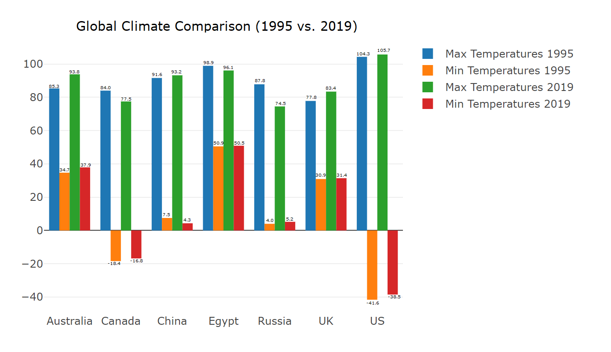

Project 2 Team3
Project Overview: The goal of this project was to develop an interactive view of Average Temperature of global cities during the period between Jan 1995 - May 2020. We aim to design a User-Driven D3/Plotly heatmap of US that would display average temperature filters such as by country, region, etc. Other visualizations include a Time Series, Dual Line Graph(Plotly) of High/Low temp by month for Countries/Regions.

